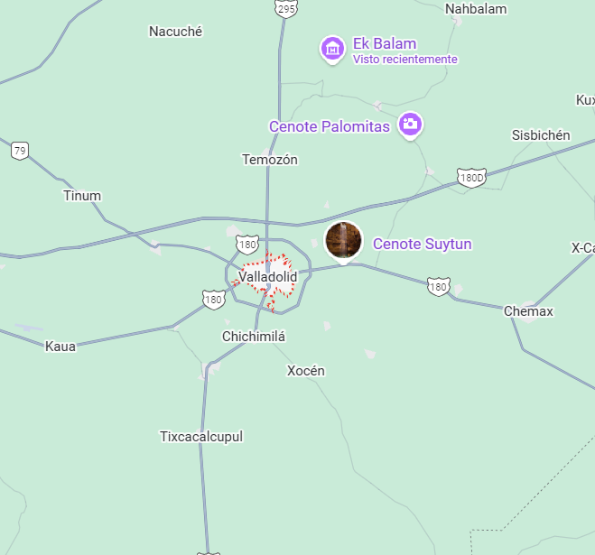

Es una ciudad colonial ubicada en el oriente de Yucatán, reconocida por su historia y arquitectura tradicional. Fundada en 1543, desempeñó un papel importante durante la época colonial y en movimientos históricos como la Guerra de Castas. La ciudad destaca por sus calles tranquilas, casonas antiguas y lugares emblemáticos como el Convento de San Bernardino y la Catedral de San Servacio. Valladolid refleja la mezcla de cultura maya y herencia española, visible en su gastronomía, tradiciones y vida cotidiana. Hoy es un Pueblo Mágico muy visitado por su ambiente pintoresco, su cercanía a cenotes y su riqueza cultural.
Ubicación |
Información Esencial
|